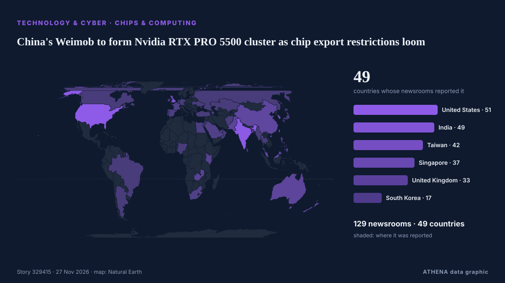

China's Weimob to form Nvidia RTX PRO 5500 cluster as chip export restrictions loom

Weimob, a Chinese provider of cloud-based commerce software and marketing services, announced its planned purchase of 5,000 Nvidia RTX PRO 5500 graphics cards for its own AI-powered services as well… from DigiTimes Asia
What changed 140 new reports from 63 outlets in the last 24 hours.
See the sources ›Evidence: Fair
Reported independently by 129 outlets in 49 countries since 14 Nov, first by The Independent; coverage is at its peak. ATHENA rates the risk elevated (4.2/10), driven mainly by the severity of the harm described and the pace of the reporting. Confidence is 86% (high), with 129 independent outlets corroborating it and an average source reliability of 72%. Outlets by country: United Kingdom (8), Singapore (7), Malaysia (4). Coverage: 14 Nov to 27 Nov, 296 hours.
What changed: 140 new reports from 63 outlets in the 24 hours to 27 Nov.
First reported as: Small businesses in Singapore need more guidance to gain AI benefits: Meta study
AutomatedSelected, grouped and scored by ATHENA's published method from 25 independent outlets. The headline is the outlet's own; ATHENA's sentences follow fixed patterns - no generative AI writes them. How it works →
How to read this page
- What you are reading
- 129 outlets in 49 countries reported this event. The reports below are listed in the order they appeared; each headline opens the original article. ATHENA writes none of the reports.
- Our reading
- For the record — The reports describe a completed, domestic, commercial or personal matter. We list it so you can see who reported it and when. We are not tracking a risk of wider conflict here.
- How much evidence
- Fair Several independent outlets agree, but the picture could still change.
After repeats, off-topic items and stale reports are removed, 13 of the 40 listed reports are counted; 68% of the headlines match the event.
- What this does not mean
- ATHENA measures how an event is reported, not whether it is true. This is not a forecast, a judgement on who is right, or advice.
- What would change it
- Reports from other independent outlets showing a different development, or a firm confirmation or denial from an official source.
Reading R2 · refreshed with every update of this page. ATHENA has not yet published a track record for these readings; when it does, it will be linked here.
At a glance
Selected, scored and written by ATHENA's published methodology. No editor intervenes in individual events. How this is produced ›
| 14 Nov 20:35 UTC | 1 |
|---|---|
| 15 Nov 08:35 UTC | 0 |
| 15 Nov 20:35 UTC | 0 |
| 16 Nov 08:35 UTC | 2 |
| 16 Nov 20:35 UTC | 0 |
| 17 Nov 08:35 UTC | 1 |
| 17 Nov 20:35 UTC | 0 |
| 18 Nov 08:35 UTC | 4 |
| 18 Nov 20:35 UTC | 2 |
| 19 Nov 08:35 UTC | 2 |
| 19 Nov 20:35 UTC | 5 |
| 20 Nov 08:35 UTC | 5 |
| 20 Nov 20:35 UTC | 1 |
| 21 Nov 08:35 UTC | 1 |
| 21 Nov 20:35 UTC | 0 |
| 22 Nov 08:35 UTC | 1 |
| 22 Nov 20:35 UTC | 3 |
| 23 Nov 08:35 UTC | 1 |
| 23 Nov 20:35 UTC | 3 |
| 24 Nov 08:35 UTC | 15 |
| 24 Nov 20:35 UTC | 56 |
| 25 Nov 08:35 UTC | 65 |
| 25 Nov 20:35 UTC | 57 |
| 26 Nov 08:35 UTC | 59 |
| 26 Nov 20:35 UTC | 81 |
Why these numbers
Importance
How widely and how prominently the story is reported.
Risk
What the reports describe, scored for possible harm. It is not a forecast.
Confidence
How well independent outlets support the story.
The reporting — who reported it, and when
headline as published · opens the original- The Independent · United KingdomInsiders predict Jensen Huang ‘will have a second act’ as resurfaced images show him embracing alleged Chinese spy
- The Business Times · SingaporeSmall businesses in Singapore need more guidance to gain AI benefits: Meta study
- The Business Times · SingaporeSingapore shares fall in tandem with key Asian markets on AI uncertainty; STI down 0.9%
- The Business Times · SingaporeSingapore stocks fall even as exports surge; STI down 1.4%
- The Business Times · SingaporeSingapore shares close lower on Wednesday; STI down 1.1%
- Times of India · IndiaBuilding weapons of tomorrow: Why China is desperate for Nvidia AI chips
- Business Recorder · PakistanNvidia stops shipping US-approved AI chips to China
- The Korea Times · South KoreaAnthropic prices blockbuster IPO as Nvidia scandal rattles AI stocks
- interest.co.nz · New ZealandWhat Nvidia's crisis reveals about the chip war
- Yonhap (English) · South Korea(URGENT) S. Korea's exports top US$1 tln for 1st time on strong chip demand
- Free Malaysia Today · MalaysiaTech firms rise after record Anthropic IPO but Nvidia casts shadow
- Financial Times - Global economy · United KingdomTSMC and Samsung suspend some chip shipments to Chinese customers
- The Straits Times · SingaporeCalifornia probing if Nvidia misled investors on China risks
- Malay Mail · MalaysiaNvidia chips at YTL’s Johor data centre were run for China’s Alibaba, says NYT
- New York Times Business · United StatesNvidia Asked to Sell Chips to Companies Tied to Chinese Military and Megaspeed
- DigiTimes Asia · TaiwanChinese tech giants sought 1.1 million US AI chips for Southeast Asian data centers, license records show
- Arab News · Saudi ArabiaUS approved sale of Nvidia, AMD chips to Chinese companies, FT reports
- Guardian Business · United KingdomAsian stocks headed for worst week since 2020 as Anthropic IPO fails to end AI rout – business live
- The Guardian · United KingdomNasdaq erases all 2026 gains as AI sell-off dampens Anthropic’s second day of trading
- New York Times Business · United StatesStocks Often Prosper After an Abrupt C.E.O. Exit. Is Nvidia Different?
- The Next Web · NetherlandsCalifornia subpoenas Nvidia over whether chips or secrets reached China
- Insurance Journal · United StatesCalifornia Probing if Nvidia Misled Investors on China Risks
- Financial Times - Markets · United KingdomUS tech stocks plunge into bear market in worst week since Covid-19 crisis
- The Next Web · NetherlandsSamsung names new chip and phone bosses amid a reported China shipment halt
- The Straits Times · SingaporeUS probing alleged Chinese spy tied to former Nvidia CEO, says intelligence chief
- PYMNTS · United StatesNvidia’s Chip Sales Targeted in California Criminal Probe
- Business Recorder · PakistanUS futures bounce as AI rout rattles Asian stocks
- Financial Times - Global economy · United KingdomAsian regulators rush to support sagging markets as AI trade falters
- Egypt Independent · EgyptBlacklisted Chinese universities procured Nvidia chips, records show
- Free Malaysia Today · MalaysiaUS stocks surge, cheering return of Nvidia CEO
- DigiTimes Asia · TaiwanSpaceX prices US$44 billion Nvidia chip financing, with most debt yielding above 8%
- SBS News · AustraliaA third-country link allowing Nvidia chips to get to China is under scrutiny
- Financial Times - Markets · United KingdomAnthropic closes below IPO price as tech rally fades
- Free Malaysia Today · MalaysiaUS futures, European stocks slip as Nvidia rally cools
- Zambian Observer · ZambiaKaitlan Collins exposes Trump’s Nvidia stake on live TV
- The Guardian · United KingdomThe Nvidia case is just the latest episode of Trump disregarding intelligence
- The Business Times · SingaporeXi plays long game on US chip retaliation after Nvidia whiplash
- Express Tribune · PakistanGreat AI market shake-up: tech giants face a new reality
- ProtoThema English ·Nvidia VP Rev Lebaredian to Newmoney.gr: Advice for Greece, and his thoughts on Jensen Huang (video)
- DigiTimes Asia · TaiwanChina's Weimob to form Nvidia RTX PRO 5500 cluster as chip export restrictions loom